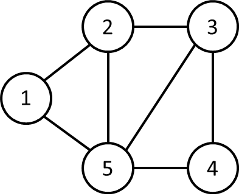

Disciplinas
-
ESTRUTURA DE DADOS. Concluído
Materiais
- Prof° Especialista: Gedson Faria, Graziela Santos de Araújo e Jonathan de Andrade Silva.
- Iniciado em quarta, 5 jun 2024, 07:14
- Estado Finalizada
- Concluída em quarta, 5 jun 2024, 08:40
- Tempo empregado 1 hora 25 minutos
- Avaliar 5,50 de um máximo de 10,00(55%)
Questionário ✅ ❌
Pergunta 1
Considere as afirmações a seguir sobre cadeia de Markov. Considere P a seguir, uma matriz de transição.
- I - Uma cadeia de Markov pode ser representada por meio de uma matriz de transição P, contendo as probabilidades de transição entre estados em determinado momento.
- II - Na matriz de transição P, em que i representa estado atual e j, o seu estado futuro, a soma de cada linha deve ser igual à “1”, ou 100%.
- III - O valor do elemento Pij representa a probabilidade de transição entre o estado i para o j em determinado período.
- IV - No modelo de Markov não há um ponto de equilíbrio em que as probabilidades permanecem as mesmas.
É correto afirmar que:
Escolha uma opção:
- a. Todas estão corretas
- b. I, II e III estão corretas
- c. II e II estão corretas
- d. I, II e IV estão corretas
- e. I e II estão corretas
Resolução:
- A cadeia de Markov é comumente representada por uma matriz de transição que descreve as probabilidades de transição entre estados.
- Em uma matriz de transição, a soma das probabilidades em cada linha deve ser igual a 1, porque representa todas as possíveis transições a partir do estado atual i.
- O elemento Pij da matriz de transição representa a probabilidade de transição do estado i para o estado j.
- No modelo de Markov, existe sim um ponto de equilíbrio (ou distribuição estacionária) em que as probabilidades de estar em cada estado permanecem constantes ao longo do tempo.
Pergunta 2
Qual a desvantagem da representação por lista de adjacências?
Escolha uma opção:
- a. Gasta mais memória do que matriz de adjacências.
- b. Não existir um modo mais rápido de determinar se uma dada aresta (x,y) está presente no grafo do que procurar por y na lista de adjacências Adj[x].
- c. Não ter um tamanho pré-definido.
- d. Ser uma estrutura de alocação dinâmica.
Resolução:
- A lista de adjacências geralmente gasta menos memória do que a matriz de adjacências, especialmente para grafos esparsos.
- Na lista de adjacências, para verificar a existência de uma aresta (x,y), é necessário percorrer a lista de adjacências de x até encontrar y, o que pode levar tempo proporcional ao número de vértices adjacentes a x. Em contrapartida, na matriz de adjacências, a verificação é imediata, pois basta acessar o elemento correspondente na matriz.
Pergunta 3
Dado o grafo G a seguir, relacione corretamente as linhas da matriz de adjacências de G:
- Linha 4 = ...
- Linha 5 = ...
- Linha 2 = ...
- Linha 1 = ...
- Linha 3 = ...
Opções: 11110, 01011, 01011, 11110, 00101.
Resposta: Verdadeiro. ❌Resolução:
- Linha 4 = 11110
- Linha 5 = 01011
- Linha 2 = 01011
- Linha 1 = 11110
- Linha 3 = 00101
Pergunta 4
O funcionamento do Pagerank se baseia na aplicação de parte da Álgebra Linear, utilizando principalmente o conceito de determinantes e da cadeia de Markov. Dessa forma, é possível identificar quais os sites são menos seletivos e posicionar, em ordem, os links com informações menos importantes para o assunto pesquisado.
Escolha uma opção: Verdadeiro Falso.
Resposta: Falso. ✅Resolução:
- O conceito de determinantes não é central para o algoritmo PageRank. Em vez disso, o PageRank utiliza matrizes de transição e cálculo de autovetores e autovalores.
- O PageRank é utilizado para medir a importância relativa das páginas da web, não para identificar quais sites são menos seletivos ou para categorizar informações como "menos importantes". Ele classifica as páginas com base em sua relevância e os links apontados para elas.
Pergunta 5
Dado o grafo G a seguir, quantos nós tem em cada entrada da lista de adjacências de G, da entrada 1 até 5, respectivamente:
Escolha uma opção:
- a. 4, 2, 3, 1, 2
- b. 2, 3, 3, 1, 4
- c. 2, 3, 4, 1, 2
- d. 2, 3, 3, 2, 4
- e. 1, 2, 3, 3, 4
Pergunta 6
Após realizar uma pesquisa no Google utilizando o algoritmo Pagerank, o conjunto V de páginas V = {X, Y, W, Z} foi retornado. O algoritmo retornou os seguintes valores de Pagerank para as páginas, respectivamente: Px = 0,20 , Py = 0,33 , Pw = 0,06 , Pz = 0,41.
Analise as afirmativas:
-
I - Os resultados atingidos com Px, Py, Pw e Pz são as probabilidades estacionárias, o que indica que não mudarão com o acréscimo ou decréscimo de visitas às páginas deste universo com quatro sites.
II - Dentre as quatro páginas, a que aparecerá no topo da lista de busca é W.
III - Dentre as quatro páginas, a que aparecerá na última posição da lista de busca é Z.
IV - No resultado da pesquisa, a ordem em que estas páginas apareceram no Google foi: 1o. Z, 2o. Y, 3o. X, 4o. W.
V - O Pagerank de uma página(site) pode mudar, caso ela tenha mais acessos no dia anterior.
É correto afirmar que:
Escolha uma opção:
- a. IV e V estão corretas.
- b. I e IV estão corretas.
- c. III e V estão corretas.
- d. Todas estão incorretas.
- e. I e III estão corretas.
Resolução:
- Os valores de PageRank são considerados as probabilidades estacionárias da cadeia de Markov associada ao grafo da web. Eles representam uma distribuição que não muda a menos que a estrutura de links entre as páginas seja alterada, independentemente do número de visitas às páginas.
- A página com o maior PageRank (Pz = 0,41) é Z, não W (Pw = 0,06). Portanto, Z aparecerá no topo da lista de busca.
- A página com o menor PageRank (Pw = 0,06) é W, não Z (Pz = 0,41). Portanto, W aparecerá na última posição da lista de busca.
- A ordem das páginas pelo valor do PageRank é: Z (0,41), Y (0,33), X (0,20), W (0,06).
- O PageRank é determinado pela estrutura de links na web e não pelo número de acessos diários a uma página. Embora acessos possam influenciar outros algoritmos de ranking, como os que consideram a popularidade momentânea, o PageRank clássico é estático e depende apenas dos links.
Pergunta 7

Construa a matriz de adjacências correspondente ao grafo orientado acima. Considere cada linha como sendo um número binário e a coluna 6 como sendo o bit menos significativo. A soma dos números binários das linhas 3 e 5, no formato decimal é (Obs: utilize apenas algarismos, não use espaço):
Resposta: 3. ❌Resolução:
- construir a matriz de adjacências e calcular a soma dos números binários das linhas 3 e 5.
- Matriz de Adjacências:
Vértice V1 V2 V3 V4 V5
V1 0 1 1 0 1
V2 0 0 1 1 0
V3 0 0 0 1 1
V4 0 0 0 0 1
V5 0 1 0 0 0
- Cada linha da matriz representa um vértice (V1, V2, V3, V4, V5).
- Cada coluna da matriz também representa um vértice (V1, V2, V3, V4, V5).
- Um valor "1" na célula (i, j) indica que existe uma aresta direcionada do vértice i para o vértice j.
- Um valor "0" na célula (i, j) indica que não existe uma aresta direcionada do vértice i para o vértice j.
- Para calcular a soma dos números binários das linhas 3 e 5, convertemos os números binários para decimal e somamos os valores:
- Linha 3: 00011 = 3
- Linha 5: 00000 = 0
- Soma: 3 + 0 = 3
A matriz de adjacências representa corretamente as conexões direcionadas entre os vértices do grafo. A soma dos números binários das linhas 3 e 5 é 3.
Pergunta 8
Para representar um grafo G = (V,E), podemos utilizar lista de adjacências ou matriz de adjacências. A representação por ... é preferida, porque fornece um modo compacto de representar grafos ... - aqueles para os quais |E| é muito menor que |V|². Contudo, uma representação de ... pode ser preferível, quando o grafo é ... - ... está próximo de ....
Opções: |E|, esparsos, lista de adjacências, denso, matriz de adjacências, |V|².
Resposta: .. ✅Resolução:
- Para representar um grafo G = (V,E), podemos utilizar lista de adjacências ou matriz de adjacências. A representação por lista de adjacências é preferida, porque fornece um modo compacto de representar grafos esparsos - aqueles para os quais |E| é muito menor que |V|². Contudo, uma representação de matriz de adjacências pode ser preferível, quando o grafo é denso - |E| está próximo de |V|².
Pergunta 9
As listas de adjacências não podem ser adaptadas para representar grafos ponderados, ou seja, grafos em que cada aresta tem um peso associado a ela.
Escolha uma opção: Verdadeiro ou Falso.
Resposta: Falso. ✅Resolução:
- As listas de adjacências podem ser adaptadas para representar grafos ponderados. Em uma lista de adjacências para um grafo ponderado, cada elemento da lista não só indica a presença de uma aresta, mas também pode armazenar o peso dessa aresta. Por exemplo, cada entrada na lista pode ser um par (ou um objeto mais complexo) que contém o vértice de destino e o peso da aresta.
Lista de Adjacências:
Vértice 0: [(1, 2), (3, 5)]
Vértice 1: [(0, 2), (2, 3)]
Vértice 2: [(1, 3), (3, 4)]
Vértice 3: [(0, 5), (2, 4)]
É possível e comum usar listas de adjacências para representar grafos ponderados.
Pergunta 10
Dado o grafo orientado G a seguir, sobre sua lista de Adjacências Adj, é correto afirmar que:
Obs.: Cada alternativa errada que for marcada anula a pontuação que seria recebida por uma alternativa correta.
Escolha uma ou mais:
- a. Adj[5] é vazia.
- b. Adj[3] possui um único valor em sua lista.
- c. Adj[1] possui quatro valores em sua lista.
- d. Adj[6] possui como entrada o valor 6.
- e. Adj[4] é vazia.
Resolução:
- De acordo com a definição de lista de adjacências, uma entrada vazia indica que o vértice correspondente não possui arestas direcionadas para outros vértices.
- Uma entrada com um único valor na lista de adjacências indica que o vértice correspondente possui apenas uma aresta direcionada para outro vértice.
- O vértice 1 (V1) possui arestas direcionadas para os vértices 2 (V2),3 (V3),4 (V4) e 5 (V5).
- Uma entrada com quatro valores na lista de adjacências indica que o vértice correspondente possui quatro arestas direcionadas para outros vértices.
- O grafo possui apenas 5 vértices (V1,V2,V3,V4,V5).
- As entradas da lista de adjacências correspondem aos índices dos vértices, iniciando em 0.
- O índice 6 não corresponde a nenhum vértice no grafo.